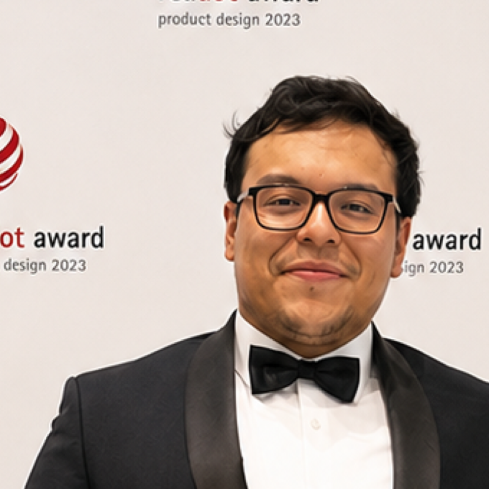

Lab-grade data, out of the lab.
A metabolic cart can tell you almost everything about your aerobic engine. The problem is that almost no one can get to one. AeroCardia exists to close that gap.
Started by Matthew Behr and Dr. Abhinav Sharma.
AeroCardia was founded by Matthew Behr, P.Eng, a McGill-educated engineer, and Dr. Abhinav Sharma, MD, PhD, a practicing cardiologist. They kept seeing the same gap from opposite sides: measuring heart and lung function outside of a clinic was extremely difficult, and the measurements that best describe cardiorespiratory fitness — oxygen uptake, ventilation, gas exchange — stayed locked behind hospital and university equipment, including for people who most needed to be watched right after being discharged from hospital care.
Athletes were making training decisions on heart rate and feel. Clinicians were watching a measure of cardiorespiratory fitness go unmeasured in almost everyone outside of a lab. So Matthew and Abhinav set out to build a sensor small enough to wear on a run, accurate enough to trust, and simple enough that you would actually use it — to help everyday people monitor their heart and lung function and train with real numbers.

Built by people who use it.
Matthew Behr, PEng
Chief Executive Officer
A McGill-educated engineer and ultramarathon runner. Matthew has spent his career bringing ambitious health technology to market, and is building AeroCardia to put the numbers elite athletes chase within reach of everyday runners and riders.

Abhinav Sharma, MD, PhD
Chief Medical Officer
An award-winning cardiologist and researcher. Abhinav brings the same scientific rigor from his research career to a device built for daily training.
Alberto Alonso Romero
EngD
Ewan MacKenzie
MScA
Sarra Chebaane
MSc

Álvaro Jesus Villagómez López
MD, MEng
Matthew Pompeo
BEng
Isabelle Ouimet
BEng
Jena Dorrington
MEng
Trishane Wijeyawickrema
Dev
Mariem Kallel
Dev MSc
Helping build what's next.
Alexandra Desmarais-Couture
Marketing Intern
Ginna Alhadad
Engineer Intern
Fitness you can measure is fitness you can improve.
VO2 max is one of the clearest windows into cardiorespiratory fitness — and one of the few fitness measures that responds quickly to training. Our goal is simple: make it a number you can watch move, season after season, without booking a lab.
What makes AeroCardia different.
Heart and lung
Reports both cardiac and respiratory measurements from a single session — not just breathing.
Built on clinical data
Our estimates are developed and checked against reference metabolic testing, with patent-pending methods and AI-enabled analytics.
Wellness first
AeroCardia is designed for training and general wellness. It is not a medical device and does not diagnose disease — and we are deliberate about that line.
Tested every day, on real athletes.
The device you see on this site is a working prototype. Every iteration is validated on the bike and the treadmill against benchtop analysers, then refined — sensor placement, seal, weight, the feel of the strap.
Backed by builders and clinicians.
 McGill Dobson Centre for Entrepreneurship
McGill Dobson Centre for Entrepreneurship
 Garage&Co
Garage&Co
 Vitruvius Venture Studio
Vitruvius Venture Studio
 Marika Zelenka Roy Innovation Prize
Marika Zelenka Roy Innovation Prize
Recipient of the Marika Zelenka Roy Innovation Prize.
Talk to the team.
Press, partnerships, coaching enrolment or a question about the science — we read everything.
AeroCardia · 4200 Dorchester Boulevard W, Suite 310, Westmount, Quebec, Canada